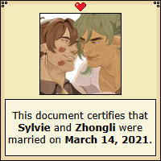

Earth and Nature
The eight love language is being a menace, a nuisance, the most insistent annoyance in someone else's life, ever present, always poking, prodding, teasing. I'm on you like a moss on a rock because I care.
Welcome to my little shrine corner for Zhongvie, aka my OC/Canon or yumeship between Zhongli of Genshin Impact and my OC Sylvie that's been rotting my brain since 2021.
As a heads up/boundary, I am non-sharing when it comes to them, so I just tend to avoid most other ships and direct conversations that include him for my own comfort.
In summary: ENFP meets ISTJ, friends to lovers in a very quasiplatonic sense, autism4adhd, old gods in love, friendship at their core, mourning and growing together, fashionista wife and 'just a guy' husband, affectionate bullying, seeing beyond the mask you wear

Personal Blabbing + History
Mild warning for a bit of fandom rants I guess? Sorry, I have a lot of feelings around the shipping culture in Genshin / Hoyoverse in general but that's an ugly can of worms to open up; too long didn't read, people sucked at characterizing him so bad that I made Sylvie to kiss him instead.
My sunshines my babies the two stupid blorbos I could yap about for hours and talk in multi-paragraphs cause I'm insane over them. I haven't done any OC/Canon for about ... 8 years before Sylvie came into being? My last OC/Canon or self-ship content was when I was around 12-14, and that was for Bleach of all things. Then I had my original OC who took over my life for 7-8 years before I retired him, and haven't touched OC/Canon since then.
Mild aside: it's funny I used to self-ship when I was little with characters (my first self-ships were with Roxas Kingdom Hearts and Ulquiorra from Bleach ... and I guess Barry from Pokemon Platinum), but then I made an OC and found a personal lack of interest in being the one to be kissing my faves. I like making OCs that fit into the world seamlessly and giving them indepth relationships w/not just the F/O, but with the world itself. You could argue I could do that with 'myself' but ... alas, I am a very disconnected person from who I am and prefer to watch as a third party. Also ew for imagining myself having sex.
Come 2020, I got into Genshin upon release and was smitten with the world and everything ... and of course, when you show to me a god who has a dragon shape, how could I not become fond of him? I liked Zhongli since his release, but god knows I haven't considered a ship or anything with him cause ... just wasn't at the front of my mind!!
... at least until I got inundated with ship art of him and Childe, and unfortunately saw both of their characterizations butchered time and time again (fuck you mean he's a narcissist/jackass for what he did). I'd be lying if I said Sylvie wasn't made out of spite and annoyance for how the fandom treated him!! I wanted to give him a ship that would make sense!! I do not see this man opting to date a mortal who is going to die or force immortality on anyone!! He's already lost enough during the war!!
... and so uh, Sylvie came to be. I thought Dendro as a concept was cool (it wasn't out yet in 2021 when I made them, Sumeru was only in bits and pieces of lore then), and I thought a tree god that knew him from before the war could be a fitting half to him.
Little did I expect how hard I'd fall for them both, how much Sylvie would become a comfort for me, how much love I'd have for them, how much it'd fuel my artistic growth to draw Sylvie ... and I met one of my closest friends through roleplaying Sylvie on tumblr (as she was writing Zhongli, and she's become my writing partner and the canon Zhongli to my heart and who kisses Sylvie).
I'm such a sucker for lovers who are friends first before all that, those that understand that being a god is not all sunshine and rainbows—a shared loss of friends, of a loss of identity and having no wishes of your own, of the responsibility and joy and aches. And I love exploring that in them, and both of them finding peace and themselves and who they are by the end of it. To enjoy life to its fullest, and embrace those that are by their side, even if some they will outlive.
I've also met such wonderful people through the yume community and I'm honestly glad I got back into it, so having them, and Sylvie, has been such a highlight of my life since then. Be cringe, be free.
.png)
.png)
.png)
.png)
.png)
.png)
.png)
.png)

Basic Info
Aesthetics
History
Introduction
A bickering, old, married couple would be the simplest and easiest way to summarize their dynamic—and it's what many think of them at first sight, though at the core of their relationship is a foundation of a friendship that has persisted for thousands of years. Both see each other as a friend and equal partner before all else, and bear a deep sense of trust and respect that runs to their very essence, having seen each other at their highest and brightest—and the lowest and ugliest.
Interactions between the two come easy and freely as water flows, resulting in either hours-long conversations about the broadest and wildest of topics, or petty back and forth 'arguments' over the smallest and silliest things—often instigated by Sylvie—that ends with both having a chuckle.
First Meeting
A long, long time ago was when these two first met ... a time before the Seven were a thing, before the Archon Wars, and when gods were abundant and plentiful across the land; Sylvie, going as Foras back then, often travelled during the winter months (as they were known to 'hibernate' by the people of Sumeru during that time). Their travels brought them to the lush lands of old Liyue, where a certain old god was taking a rest with his majestic draconic tail swaying around. Impulse and curiosity pushed the God of Trees in their feral form to bite into that tail and see how hard the scales were, only to be met with a violent whack to their head by the God of Contracts, Morax.
Although the childish action earned some bickering between the two and butting of their heads, Foras continued to come around to visit Morax, finding amusement in his bluntness and cracking through his stoic personality. Foras's persistence in coming around on their trips, alongside their eagerness to talk, share their own stories, to spar with him, and their general carefree nature eventually warmed Morax up to their company for many years to come, and to this very day.
Friends were made amidst the land of Liyue, and many other places, but the future land of Geo became almost like a second home for the Dendro god, making many roots and ties over the years they visited.
Archon War and Death
The Archon War was not kind on either of them, with many gods at each other's throats for the prized seats in the heavens above, and with people—normal humans—looking to the gods for protection in a time of strife and chaos.
Morax had the people of Liyue to protect as gods, both friends and foe alike, fell around him. No time to mourn, no time to think, no time to look at who had fallen on the battleground. Only one wilted Glaze Lily was lost right in his arms during this time, the one loss he was doomed to see with his own eyes.
Sylvie had the people of Sumeru under their wing; although not the god of a full nation, they cherished and adored the people that looked up to them. Although they did their best to protect everyone, trees were falling, the grounds were shattering, and no amount of Dendro powers were to keep them isolated and safe. And so, in a desperate attempt to find safety for their people, they tried to get them out of Sumeru, to gods they knew even in the throes of war would still extend a hand.
But many had their own issues, many had their hands full, their houses crumbling, to where even their own people were fighting to survive. Others were already dead.
Their search for the safety of their people brought them out all the way to Mondstadt, that during then was a frigid iceland and battle between Andrius and Decarabian; Andrius was one of the gods that Sylvie was on relatively good terms with—even if the two disagreed on their views of humanity.
But they never even got a chance to reach him, finding their death in the frigid wastelands of Mondstadt, and with their people left behind in Sumeru, unknowing of what happened to their god.
Revival and Return

In reality, Sylvie had died, but their abilities are rooted in regeneration, which kicked in for the very first time ever with their 'death'; their body was surrounded by enough Dendro to slowly stitch and hold their form back together and to keep it from dispersing violently. Even so, this process took a thousand years, leaving them to slumber comatose under what would be the Windrise Tree in the future.
Their awakening brought a wave of confusion, anguish, and hurt; the war had come to an end, and their existence has come to disappear in the history of Teyvat. Who was to know Foras anymore? Did anyone look for them? Were their people okay? Were their people angry? Their death robbed them of themselves.
What was their purpose anymore, if not to be a god? And so, their identity was shed, and so was Sylvie born. Even so, they wanted to seek out the gods that remained.
There was relief in finding out that Morax, now under the title of Rex Lapis, was still alive—but there was a distant rift that hung awkwardly over them due to the unspoken loss between the two of them, of old friends, of people they were meant to protect, and more. Sylvie did their best to try to maintain their connection, especially as few gods remained, but the other god kept a large distance between them, coming off tired and with the responsibility of his role as Archon superseding any personal desires.
It was frustrating, lonely, and heart-aching, only dulled by the fact that their time was occupied otherwise learning the world of the living, and what it means to be human. But they wouldn't give up on their friendship. Not when they could see how lonely it was in return to be an Archon.
Khaenri'ah
The Cataclysm was a catalyst for Sylvie to disappear off Teyvat for the last five-hundred years and into the Dark Sea, their anger towards Celestia too great to remain around the other gods. Although a lonely, and harrowing experience, it helped them in expanding their knowledge and even meeting some new faces they would call friends now. They still lingered on the fringes of Teyvat, catching bits and pieces of news, but not having the courage to return after so many years had now passed.
... little did they expect the news of Rex Lapis's demise to have them running back.
Return and Confession

Upon promptly going through all the stages of grief over staged death—with massive relief in seeing he was alive and doing a terrible job of disguising himself—Sylvie came to find that Rex Lapis was now under a new identity as the Wangsheng Funeral Parlor consultant, Zhongli. The name of Rex Lapis was left behind, along with the responsibilities of Archon. Now with ample free time on his hands and no weight to hold him back anymore, Sylvie's warmth was returned, and their friendship was rekindled in full without there being any barriers.
Without realization (at least on Sylvie's side in the beginning), their mutual care and connection flourished into underlying romantic feelings that unfurled as the two now could truly live for themselves, with Zhongli accepting his own in full while quietly, patiently waiting for them—because it was not hard to see that they felt the same in return.
(His attempts to flirt with them had promptly gone well over their head, though.)
Sylvie, meanwhile, struggled with their own out of fear of ruining their friendship that had barely just been rekindled. But over time, over the months they've returned, over fleeting touches, compliments that held more than what was said, being welcomed so openly back into his arms and life ... it bubbled up into impulsiveness that made Sylvie take the first action in kissing him—almost causing a full-blown panic at them ruining said friendship—only for Zhongli to reassure them the feelings were shared in full.
Present

Alongside following the traveller's journey, Sylvie's return has given both the opportunity to heal and bring some doors to a close. Sylvie's death—unfortunately viewed in full by Zhongli through walking in their dreams—finally allowed him to grieve and acknowledge their death in full, and his heavy guilt in not thinking of them until much, much later.
Visiting Sumeru, after many years of avoiding it, brought closure to Sylvie for how their past self and history had been ripped away from them with their death and the conclusion of the war, finally finding enough comfort to call Sumeru their home once more and to be welcomed with open arms by the forest that never forgot.
A funeral was held for them, by Zhongli's gentle nudging, to fully say goodbye to Foras. A funeral that hurt, but was something for the both of them to bring closure to.
Some other major instances include an incident at the chasm which resulted in a massive injury to Sylvie, half of their torso being completely obliterated in the process of destroying an Abyssal demon that was threatening to leak out to the chasm's surface, leaving them bedridden for a month as their body slowly purged the abyssal poison within. Zhongli carefully helped in nursing them back to health, letting Sylvie see his vulnerability and fear in losing them again after he had seen them killed once.
Their relationship eventually culminated in an accidental marriage; the first birthday spent together with him as Zhongli resulted in Sylvie gifting him matching rings filled with materials of their respective element ... little did they realize the implications of it until others pointed it out. Later, for their birthday, he has gifted them chopsticks in return that have been carved to represent both of them; jade and wood melded together in the shape of a deer and dragon ... though with full intentions as a proposal gift for them.
Even so, their relationship truthfully hasn't changed much even with being officially together and married; they come off like old friends, allowing their childish sides to show in jesting and affectionate jabs, and a comfort that is found only among other gods and those who have known them for a very long time. The world of Teyvat is their oyster to explore now—as their own people and selves.
Trivia
-
Their primary affectionate pet names/nicknames for each other are
𐎠𐎿𐎴 - stone (asan) / my gemstone / my mountain / my sunflower for Zhongli, and
my forest / my deer / 林 - forest / 琳 - precious jade (lín) for Sylvie.
- The word for jade and forest do overlap in how it's said, so it's a bit of a dual word play.
- That's not to speak of the many nicknames Sylvie has for Zhongli with the mere purpose to annoy him (parched rock, sir consultant, dusty old man, your highness, Rex Lapis (derogatory), etc.). They usually don't work.
- Zhongli has (unfortunately) had Sylvie's terrible humour rub off on him and has laughed at the word boobies—to his own shame and hope that Sylvie never finds out, otherwise they won't let him live it down.
- Zhongli often has his accessories stolen by Sylvie just because they want to wear them (namely his hair clasp and earring). This has culminated in him getting gifted a big green bow to use as a hair clasp because they thought it'd be silly. It is now a permanent accessory for him.
-
Sylvie has gifted him
a makeshift gnosis
before they had gotten together, though the purpose of it was more to help with the aches
and emptiness from giving up his own; little does Sylvie know that they've given him a
life-line for them to revive from that piece were they to be killed.
- The simplest explanation is that Sylvie can regenerate from any piece of themselves, that includes the one they've made from their own essence. The only cost is they'd not have the full memories from when they 'separated' it from themselves, they'd have his memories muddied with theirs instead
- Subsequently, he has later on for their first birthday gifted them one in return as a symbolic and loving gesture, though not to the same concentration of elemental energy.
- They alternate between whose teapot they sleep in, as both Sylvie and Zhongli have their own ... but primarily, if they are in Liyue, they stay at Zhongli's physical residence.
- If someone were to ask them whose the freakiest between them two, Sylvie would point to Zhongli with zero hestiation and he'd bat his eyelashes and go like 'who, little old me?'
- Sylvie's hair was designed on purpose to kinda mirror his with a giant gradient fringe + gradient hair ends, but to have a gradient middle strand instead.
Gallery
I'll ... I'll eventually remake this ... cursed to want to do a masonry grid and I do not have the brainpower to that quite at this moment. You can check out their Toyhouse Gallery until then + it has credits to all the images I've commissioned and used here.
Links
Credits
- Dollarchive for the vine borders